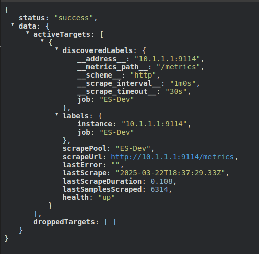
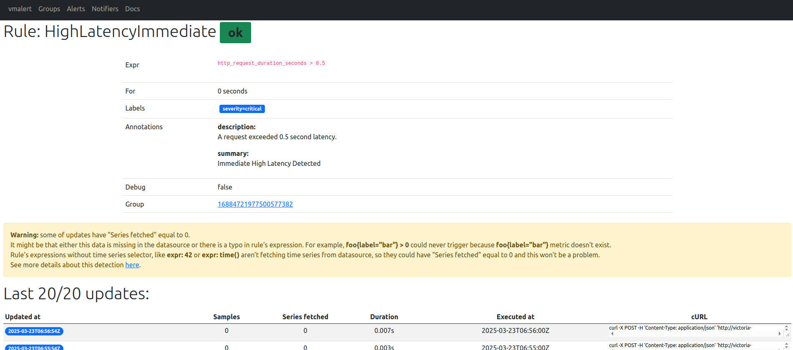

What is VictoriaMetrics(VM)?
- VictoriaMetrics is a free open source time series database (TSDB) and monitoring solution, designed to collect, store and process real-time metrics
- My company used VM to replace Prometheus for high availability and better performance.
- In this article, i will introduce 2 types of VM:
- Single node VM: for small businesses that have fewer than 10-20 servers
- Cluster VM: for larger businesses
Small business with VictoriaMetrics single-mode
Docker compose
- Yes, using docker compose for fast deployment and easy to control.
- Docker compose file:
services:
victoria-metrics:
image: victoriametrics/victoria-metrics:v1.114.0
container_name: vm_single_node
ports:
- "8428:8428" # Default port for HTTP API
volumes:
- vm_data:/storage # Save data to a volume
- ./prometheus.yml:/etc/vm/prometheus.yml # Mount file config
command:
- "-storageDataPath=/storage" # Specify the path to store data
- "-retentionPeriod=30d" # Retain data for 30 days
- "-promscrape.config=/etc/vm/prometheus.yml" # Specify the path to the config file
restart: unless-stopped
vmalert:
image: victoriametrics/vmalert:v1.114.0
container_name: vmalert
ports:
- "8880:8880" # Port for vmalert HTTP API/UI
volumes:
- ./alert_rules.yml:/etc/alerts/alert_rules.yml # Mount alert rules file
command:
- "-rule=/etc/alerts/alert_rules.yml" # Path to alert rules
- "-datasource.url=http://victoria-metrics:8428" # Connect to VM
- "-notifier.url=http://alertmanager:9093" # Connect to Alertmanager
- "-httpListenAddr=:8880" # vmalert listens on 8880
depends_on:
- victoria-metrics
- alertmanager
restart: unless-stopped
alertmanager:
image: prom/alertmanager:v0.27.0
container_name: alertmanager
ports:
- "9093:9093" # Default Alertmanager port
volumes:
- ./alertmanager.yml:/etc/alertmanager/alertmanager.yml # Mount Alertmanager config
command:
- "--config.file=/etc/alertmanager/alertmanager.yml" # Use mounted config file
restart: unless-stopped
volumes:
vm_data:
prometheus.ymlfile:
global:
scrape_interval: 60s # Interval between each scrape
scrape_timeout: 30s # Timeout for each scrape
scrape_configs:
- job_name: 'ES-Dev'
metrics_path: '/metrics'
static_configs:
- targets: ['10.1.1.1:9114'] # target to scrape
alert_rules.ymlfile sample rules to trigger notify only:
groups:
- name: ExampleAlerts
rules:
- alert: HighLatencyImmediate
expr: http_request_duration_seconds > 0.5
labels:
severity: critical
annotations:
summary: "Immediate High Latency Detected"
description: "A request exceeded 0.5 second latency."
alertmanager.ymlfile sample with telegram notifier:
route:
receiver: 'telegram-notifications'
group_wait: 30s
group_interval: 5m
repeat_interval: 1h
receivers:
- name: 'telegram-notifications'
telegram_configs:
- bot_token: '<YOUR_TELEGRAM_BOT_TOKEN>'
chat_id: <YOUR_TELEGRAM_CHAT_ID>
send_resolved: true # Optional: Send notifications when alerts are resolved.
parse_mode: 'HTML' # Optional: Use HTML formatting.
disable_web_page_preview: true # Optional: Disable web page previews.
templates:
- |-
{{ define "telegram.message" }}
{{ range .Alerts }}
<b>{{ .Annotations.summary | default .Labels.alertname }}</b>
{{ if .Labels.severity }}Severity: {{ .Labels.severity }}{{ end }}
{{ if .Labels.namespace }}Namespace: {{ .Labels.namespace }}{{ end }}
{{ if .Labels.job }}Job: {{ .Labels.job }}{{ end }}
{{ if .Labels.instance }}Instance: {{ .Labels.instance }}{{ end }}
{{ if .Annotations.description }}Description: {{ .Annotations.description }}{{ end }}
{{ if gt (len .GeneratorURL) 0 }}<a href="{{ .GeneratorURL }}">View in Prometheus</a>{{ end }}
{{ if gt (len .DashboardURL) 0 }}<a href="{{ .DashboardURL }}">View Dashboard</a>{{ end }}
{{ if eq .Status "firing" }}🔥 Firing{{ else }}✅ Resolved{{ end }}
{{ end }}
{{ end }}
{{ define "telegram.title" }}
{{ .CommonLabels.alertname }}: {{ .GroupLabels.alertname }}
{{ end }}
- I guess i don't need to write how to start this container!
Insert and test query
- Insert script, run this, and wait like 2-3 minutes to fill up some metrics
#!/bin/bash
for i in $(seq 1 100); do
timestamp=$(date +"%Y-%m-%d %H:%M:%S")
echo "[$timestamp] Inserting metric: kienlt{kien=\"depzai\"} $i into http://localhost:8428/api/v1/import/prometheus"
curl -d "kienlt{kien=\"depzai\"} $i" http://localhost:8428/api/v1/import/prometheus
echo "[$timestamp] Sleep for 10 seconds. Insert count: $i"
sleep 10
done
echo "Completed!"
- Query with VM ui at
http://localhost:8428/vmui

Scrape Target
- We have defined our target need to scrape metrics in file
prometheus.yml - Let's check the target at the endpoint: http://localhost:8428/api/v1/targets

Rule and Notify
- Let's make a sample test to trigger our rules:
for i in $(seq 0 100); do curl -d 'http_request_duration_seconds 1' http://localhost:8428/api/v1/import/prometheus; sleep 1; echo "sleep 1s"; done
- After a little time, it will appear in vmalert UI and will be forwarded to Alertmanager


- How is it displayed in Telegram? (I know the format is ugly, but it is a demo xD)
Conclusion
- There are many features of VM but i want to keep this simple and short for single-node since we still have Cluster VM to go.
- I included vmalert and alertmanager for the complete stack!
Large business with VictoriaMetrics cluster mode
Introduction
- vmstorage: Save time-series data
- vminsert: receive metrics from client and write to vmstorage
- vmselect: handle query, select data from vmstorage
- vmagent: scrape metrics from targets and send them to vminsert
- vmalert: evaluate alerting rules and send notifications to alertmanager
- alertmanager: handle alerts sent by vmalert and manage notifications
Installtion
For this mode, i prefer to use a dedicated host/ virtual machine to install VictoriaMetrics. I will use 3 nodes to setup this cluster.
-
Here is the installation script that will install: setup-vm-cluster.sh
-
Things need to change in this script in case you want to modify the version and hosts
- hosts: update this
Step 3: Update /etc/hoststo your host or don't need if you have internal DNS system -
variables VM_VERSION, AM_VERSION
-
Check logs and port status after inserting if you have any problems. Below are example output from mine:
netstat -tulpn|grep -E "vmstorage|vmagent|vmselect|vminsert|vmalert|alertmanager"
tcp 0 0 0.0.0.0:8401 0.0.0.0:* LISTEN 491202/vmstorage-pr
tcp 0 0 0.0.0.0:8400 0.0.0.0:* LISTEN 491202/vmstorage-pr
tcp 0 0 0.0.0.0:8429 0.0.0.0:* LISTEN 491225/vmagent-prod
tcp 0 0 0.0.0.0:8482 0.0.0.0:* LISTEN 491202/vmstorage-pr
tcp 0 0 0.0.0.0:8481 0.0.0.0:* LISTEN 491216/vmselect-pro
tcp 0 0 0.0.0.0:8480 0.0.0.0:* LISTEN 491207/vminsert-pro
tcp 0 0 0.0.0.0:8880 0.0.0.0:* LISTEN 491226/vmalert-prod
tcp6 0 0 :::9094 :::* LISTEN 491238/alertmanager
tcp6 0 0 :::9093 :::* LISTEN 491238/alertmanager
udp6 0 0 :::9094 :::* 491238/alertmanager
Port access and information
- vmstorage: This have 3 ports
- 8400: Receive metrics from vminsert
- 8401: internal communication between vmstorage in the cluster
-
8482: No idea about this much but this is where exporter expose metrics of vmstorage with path:
vm-node1:8482/metrics -
vminsert: receive metrics from other sources and optimize process writes data into vmstorage in a distributed way! Here is an example write into vmstorage via vminsert. It will use port 8480
curl -X POST --data-binary 'kienlt_victoria_metrics_cluster,kiendepzai=ahihi value=42' "http://vm-node1:8480/insert/0/influx/write"
- vmselect: We have inserted data, now let's check. The endpoint will be:
http://vm-node1:8481/select/0/prometheus/vmui

- vmagent: This will show all active targets and other useful api like show all target in json format. The endpoint will be:
http://vm-node1:8429/targets
-
vmalert: Endpoint will be:
http://vm-node1:8880/vmalert/alerts. Same as vmalert in single mode -
alertmanager:
http://vm-node1:9093. Same as single-node but in cluster mode xD
Conclusion
- This is a simple article for VictoriaMetrics like how it works in single mode and cluster mode
- I'm so lazy at this time and so this article still lacks of things below:
- Real notification setup for alert manager
- Backup and Restore with vmutils
- Authentication: no auth for endpoints to access vminsert / vmselect
- No HAProxy for failover and load balancing
- There are many features i still don't know about VictoriaMetrics, i will write more articles in case i need to learn to use xD